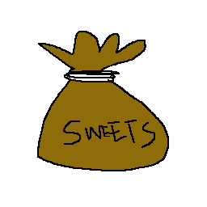

An Introduction to Probability
Probability is a fun world. There are many things we can learn. Essentially, probability lets us measure "the chance" of something happening. We can model every kind of probabilistic model as the "colored sweets in the bag" problem.
Consider this, for example: we have a bag of sweets. Our favourite sweet is the red sweet, but the bag also has a yellow sweet in it (it has one yellow sweet and one red sweet). The yellow sweets are disgusting, bleugh! Since we can get a red sweet or we can get a yellow sweet when we take something from this bag here is the set of possible options
{"yellow", "red"}
The calculation for probability is the chance of the event you want to have
occur, divided by the number of possible events. In this case, that's 1
divided by 2 which is 0.5 (50%). We say 50% because it helps us understand
roughly what the probability is when compared to other probabilities (though
there aren't that many probabilities -- more on that later).
A harder example
Ok that was pretty easy! But what about something more complicated, what if somone put a blue sweet in the bag?? Well, now the set of options looks like this
{"yellow", "blue", "red"}

The math is going to be a bit harder here! 1 divided by 3? What the heck is that? Don't worry, if we remember that 1 divded by 2 is 50%, we can work out everything else based on that...
Remember, we only care about the sweet being red or not being red, so we can group the yellow and red options into one!
{"red", {"blue", "yellow"}} = {"red", "not red"}
Now, it's easy to see that the chance that was complicated to calculate (1 in 3) is much easier to calculate as 1 divided by 2, which is 50%. So, interestingly, the chance of the sweet being red, is still 50%!. In fact, the chance of getting a blue, yellow or red sweet is all 50%.
The Second Oliver Lemma
Based on this information, you might be tempted to believe that all probabilities are 50%. This is an easy mistake for beginners to make, but is actually not so! The proof is very clever indeed, reread this if you need to it's quite complicated.
Let's start with the assumption that every probability is 50%. It's a fair assumption. But, in that case, what is the probability that a probability is 50%? Well, logically the set of possible probabilities is this
{ 50% }
As a result, we do our regular calculation -- there is 1 option, so we do
1 divided by 1... That one's pretty easy so we can't do the simplification
from earlier. But 1 / 1 is just... 100%. Now, this might seem fine, until we
realise that if something has a probability of 100%, that means the
set of probabilities is actually { 100%, 50% }
If you recalculate the probability of a probability being 50%, we get 50% now, which means we didn't need the 100% in that set anyway. However, this just means that something else is probably 100% likely, we just don't know what yet.
That's all for now
That's all for now, more on probabilities another time.